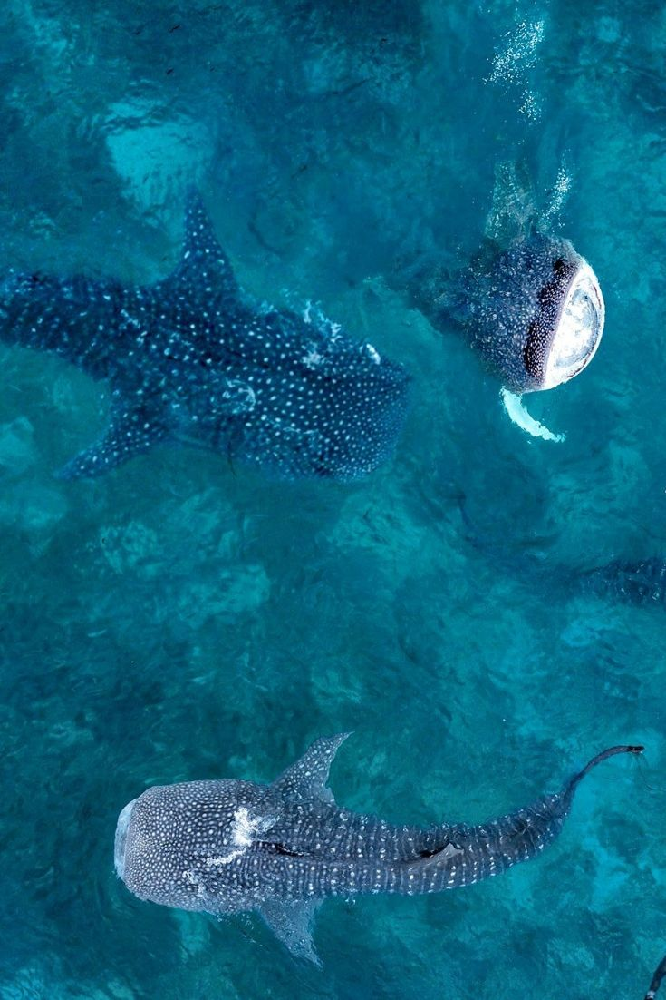
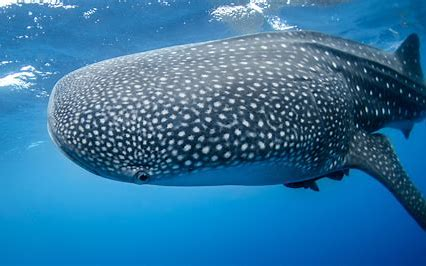
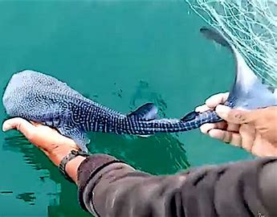

I just really enjoy this type of shark. These kinds of sharks eat meat and are still carnivores, however; they are filter feeders. That means the way they catch prey is by sucking it into their mouth and calling it a day.

With their skin pattern they are almost like reverse dalmations. And even though I'm biased and say that's one of their best features, they act similar to dogs. Very, very, lazy dogs.

Whale shark young are called "pups", like every other shark baby. They are tiny compared to how large the adult size is. Even though they can be one of the largest sharks in the ocean, they are the most nerve-easing to swim by (as they don't eat humans and just like to be curious).